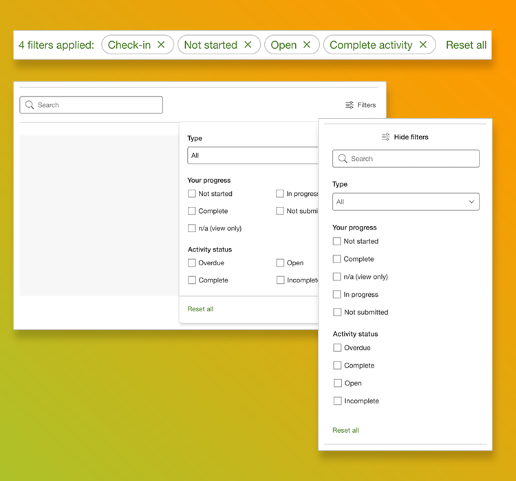
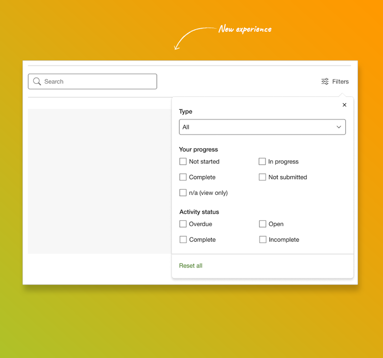
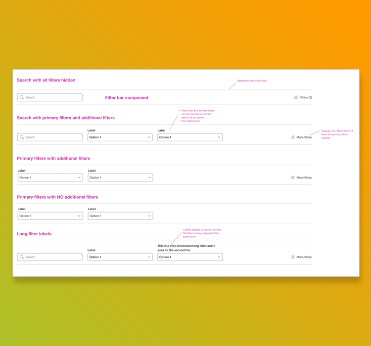
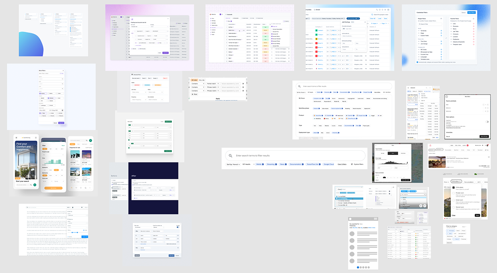

Customer feedback indicated that the user interface for creating a performance activity felt confusing and cumbersome, requiring too many steps and clicks. Users expressed a desire for a streamlined experience that keeps the focus on the content rather than the interface.
This project aimed to redesign the UI to be more intuitive, enabling users to create performance activities more quickly and effortlessly. By simplifying the process, we hope to improve user satisfaction and increase efficiency which will lead to the increase usage of performance activities. This aligns with the product’s strategy to increase Perform product adoption by 40%.

Main areas of responsibility:

Enhancing the UI for performance activity creation was a complex and time-intensive process. We needed to carefully plan incremental improvements that could each stand alone as valuable, user-centric updates.
Ensuring each improvement was independent and could be released within a four-sprint timeframe required meticulous prioritisation and agile adaptation. Balancing speed with thoughtful design choices was essential to deliver a streamlined experience without sacrificing quality.

We developed and tested prototypes with users to gain early insights into usability issues, enabling us to make informed, user-centered design decisions. Additionally, we collaborated closely with engineering to break down the improvements into 20 prioritised, standalone versions, ensuring each could be delivered incrementally within the project timeline for maximum impact.
We recently implemented the fifth incremental release and have already seen significant improvements: users report reduced confusion, and the creation workflow is noticeably faster and more intuitive.
Worked with engineering to break designs into 20 prioritized versions, ensuring incremental delivery and maximum impact.
